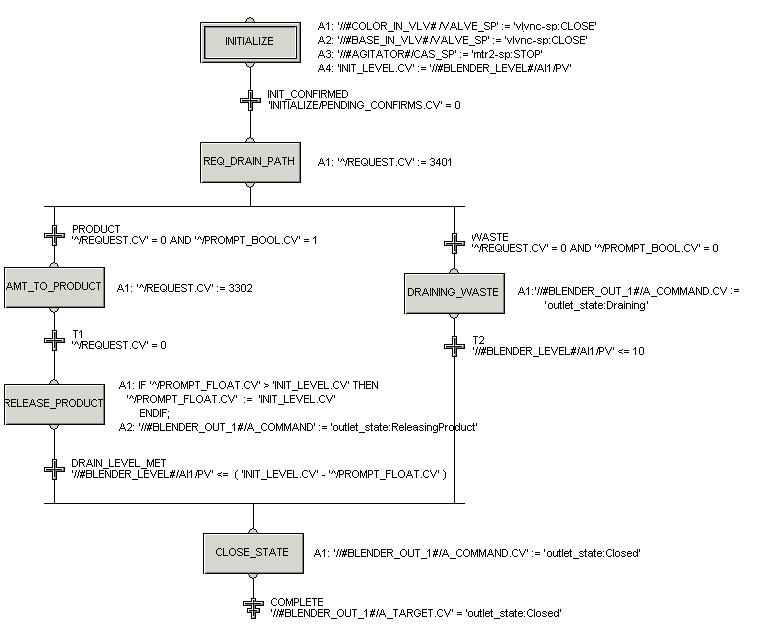

Add an operator prompt
- In Control Studio, open the DRAIN phase class and drill down into the running logic.
- Delete the line after the INIT_CONFIRMED condition and move the last step and transition down enough to allow room for modifying the logic as shown in the following diagram.
- Drag and drop steps and transitions from the palette to the diagram to create the logic shown in the figure below.
- Connect the steps and transitions as shown.
- Configure the expressions for the step actions and transitions using the Expression Editor.
-
Save the DRAIN phase class and download the phase.

The phase logic is now branched to do different actions depending on the responses to the operator prompts.
In the expression in the REQ_DRAIN_PATH step ('^/REQUEST.CV' := 3401), 34 is the code for sending a Boolean (yes/no) prompt and 01 is the ID of the message to be displayed: Send this batch to Product (YES) or Waste (NO). The operator's response is stored in the PROMPT_BOOL parameter.
The expression for the NO branch is:
'^/REQUEST.CV' = 0 AND '^/PROMPT_BOOL.CV' = 0
This will check to make sure that the operator has responded to the prompt (REQUEST.CV = 0). If the response is NO (PROMPT_BOOL = 0), then the logic will continue through this branch.
The expression for the YES branch is:
'^/REQUEST.CV' = 0 AND '^/PROMPT_BOOL.CV' = 1
Again, this checks to make sure that the operator has responded to the prompt (REQUEST.CV = 0). If the response is YES (PROMPT_BOOL = 1), then the logic will continue through this branch.